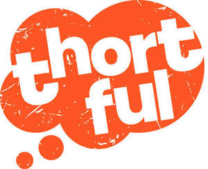

Trade Mark Journal No.2025/015 11 April 2025
UK00004155533 3 February 2025 (16,35)

- Class 16
- Printed matter; diaries [printed matter]; printed diaries; planners [printed matter]; printed desktop planners; printed day planners; paper; calendars; printed calendars; books; printed story books; printed cookery books; printed comic books; printed picture books; printed travel books; printed fiction books on a variety of topics; printed non-fiction books on a variety of topics; notebooks; paper notebooks; printed notebooks; post cards; printed post cards; wrapping paper; gift cards; gift cards of paper, not encoded; gift tags; paper gift tags; gift wrap; paper gift wrap; plastic gift wrap; metallic gift wrap; cards; blank note cards; printed motivational cards; printed picture cards; printed cards bearing universal greetings; printed flash cards; printed index cards; greetings cards; printed greeting cards; paper boxes; cardboard containers; cardboard cartons; cardboard boxes; cardboard mailing tubes; gift boxes; gift boxes made of cardboard; printed gift boxes; greeting cards containing gifts; printed greeting cards containing gifts; albums; sticker albums; stamp albums; scrapbook albums; event albums; gift bags; stationery; packaging materials; packaging materials of paper; packaging materials of cardboard; packaging materials made from mineral-based paper substitutes; decorative objects [ornaments] of paper for gifts; party ornaments of paper; papier mâché; papier mâché figurines; gift wrapping ribbons of paper; bows for decorating packaging; paper bows, other than haberdashery or hair decorations; bows (decorative) for wrapping; decorative paper bows for wrapping; paper ribbons; paper ribbons, other than haberdashery or hair decorations; tissue paper; envelopes; party decorations of paper; cardboard tubes; banners of cardboard; banners of paper; display banners of paper; display banners of cardboard; certificates; printed certificates; diaries; leather covered diaries; memo pads; pens; roller ball pens; ballpoint pens; pencils; coloured pencils; coloured pens; containers for pencils; pencil cases; pencil boxes; containers for pens; pen cases; pen boxes; artists' materials; artists’ pencils; artists’ pens; artists’ pastels; artists; brushes; artists’ charcoal; artists’ easels; artists’ sponges; artists’ paintbrushes; artists’ sketchbooks; sketch pads; canvas for painting; canvas paper; graphite pencils; graphite sticks; paint palettes; articles for drawing; articles for use in writing; framed photographs; framed poetry; framed printed poems; framed pictures; framed art pictures; apparatus for mounting photographs; photograph mounts; photograph mounting corners; albums for photographs; wedding albums; wedding books; printed guest books for weddings; christening albums; baby photo albums; paper party decorations; pads of party invitations; printed invitations; party favor boxes of cardboard; party favor gift boxes sold empty; parts and fittings for all the aforesaid goods.
- Class 35
- Retail services relating to the on-line sale of facial toner, facial cream, facial washes, facial cleansers, facial moisturizers, facial scrubs, facial lotions, facial masks, facial packs, facial preparations, facial soaps, facial oils, facial massage oils, cleansing balm, cleaning pads impregnated with cosmetics, cosmetic facial packs, perfume, reed diffusers, bath bombs, bath salts, scented bath salts, gel eye masks, hand cream, cosmetic hand cream, cosmetic gift sets, toiletries, body cleaning and beauty care preparations, fragrances, make-up, soaps, bath preparations, cosmetic preparations for skin care, creams (non-medicated) for the body, face and body lotions, moisturisers, nail polish, cosmetics, skin care cosmetics, beauty serums with anti-aging properties, beauty creams for body care, tanning gels [cosmetic], tanning creams, tanning milks [cosmetics], tanning milks [cosmetics], bath preparations, hair preparations and treatments, hair care creams, hair care lotions, hair care serums, incense, scented sachets, scented oils, scented room sprays, scented body sprays, tea light candles, candles, floating candles, votive candles, scented candles, candles in tins, candles in jars, table candles, special occasion candles, aromatherapy fragrance candles, candle gifts, candle gift sets, candles for use in the decoration of cakes, musk scented candles, scented wax melts, calendars, books, notebooks, post cards, wrapping paper, gift cards, gift tags, gift wrap, cards, greetings cards, paper boxes, cardboard containers, cardboard cartons, cardboard boxes, cardboard mailing tubes, gift boxes made of cardboard, printed gift boxes, greeting cards containing gifts, albums, gift bags, stationery, packaging materials, decorative materials for gifts, ribbons, bows for decorating packaging, bows (decorative) for wrapping, paper ribbons, tissue paper, envelopes, party stationery, party streamers, tubes (cardboard), banners of cardboard, banners of paper, display banners of paper, display banners of cardboard, certificates, diaries, leather covered diaries, memo pads, wallets of paper or card for holding money, pens, roller ball pens, ballpoint pens, pencils, coloured pencils, coloured pens, containers for pencils, pencil cases, pencil boxes, containers for pens, pen cases, pen boxes, art materials, articles for drawing, articles for use in writing, framed photographs, framed poetry, framed printed poems, framed pictures, framed art pictures, holders for photographs (other than frames), albums for photographs, wedding albums, wedding books, christening albums, christening photo frames, party stationery, paper party decorations, pads of party invitations, party favor boxes of cardboard, party favor gift boxes sold empty, mugs, cups, beverage glasses, cushions, clothing, footwear, headgear, socks, t-shirts, hoodies, underwear, ladies' underwear, men's underwear, ties, eye masks, soft toys, chocolates, chocolate sweets, chocolate confectionary, filled chocolates, milk chocolates, liqueur chocolates, dairy free chocolate, confectionary items formed from chocolate, cake mixes, biscuits, shortbread biscuits, biscuits containing fruit, cookies, cookie mixes, cookie dough, sweets, boiled sweets, sugar-free sweets, chocolate sweets, peppermint sweets, hard caramels [candies], gummy candies, hand-made candies, flowers, cut flowers, living natural flowers, bouquets of fresh flowers, plants, flowering plants, living plants, house plants, fruit plants, dried flowers, fresh edible flowers, arrangements of dried flowers for decorative purposes, alcoholic beverages, champagne, sparkling wine, red wine, spirits (beverages), gin, whisky, white wine, wine, cider, brandy, rum, vodka, kirsch, schnapps, pre-mixed cocktails, non-alcoholic beverages; advertising services; advertising via the internet; advertising; online advertising and promotional services; online advertising services for others; information, advisory and consultancy services relating to the aforesaid services.
Thortful Limited
Representative: Stobbs